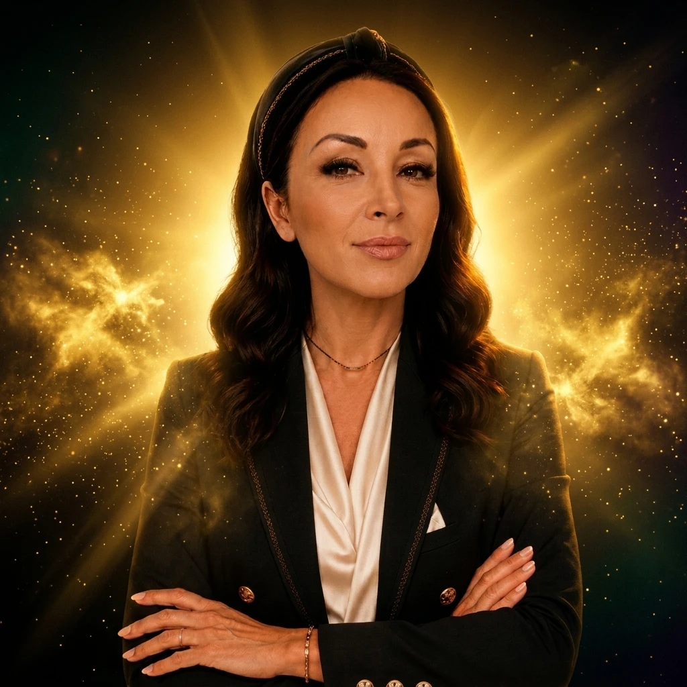

Despre Georgiana
Nu un brand rece, ci un om care a ales altă cale — și acum arată drumul și altora.
Povestea
Ca mulți dintre noi, Georgiana a pornit dintr-un loc în care „așa se face” părea singura variantă. Tranziția n-a venit dintr-un moment magic, ci dintr-o serie de alegeri: să învețe, să construiască, să nu se oprească atunci când era mai ușor să renunțe.
Din drumul acela s-a născut Universul GEO — un loc unde educația, comunitatea și strategia stau la un loc, ca nimeni să nu mai fie nevoit să pornească singur, pe întuneric.
De ce există Universul GEO
Autoritate & comunitate
Un ecosistem viu de oameni care construiesc altfel — cu răbdare și împreună.